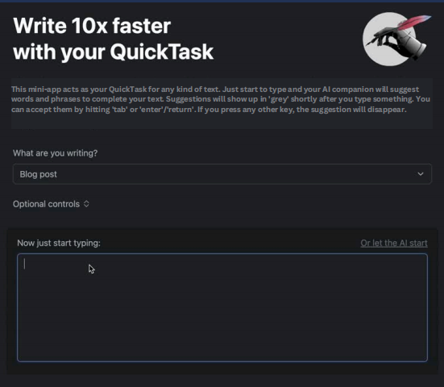

QuickTask
AI & Web Application • NLP Integration
QuickTask is a web-based platform designed to help users write faster and more efficiently using AI-powered writing assistance.
The system utilizes Natural Language Processing (NLP) to provide context-aware suggestions for academic, business, and creative writing tasks.
My role focused on front-end development and AI model integration, ensuring smooth interaction between the user interface and the language model backend.
Technologies Used
- HTML, CSS, JavaScript
- Python
- NLP / AI Integration
- REST API